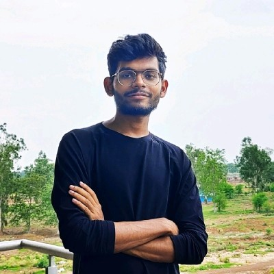

Venkata Narendra Kotyada
Research Scholar
Katha-AI Research Group
CVIT, IIIT Hyderabad
I am a PhD research scholar advised by Prof. Makarand Tapaswi at the Center for Visual Information Technology (CVIT), IIIT Hyderabad. My research interests lie in multimodal learning, generative models, and machine learning for graphs.
Before joining IIIT Hyderabad, I completed my Bachelor's degree at the National Institute of Technology Andhra Pradesh During my undergrad, I interned at IIT Bhilai, where I worked with Prof. Rishi Ranjan Singh and Prof. Soumajit Pramanik on graph-based machine learning for network optimization. I also worked with Prof. Nagesh Bhattu Sristy at NIT Andhra Pradesh on improving the efficiency of diffusion models.
Contact

News
Our paper on "Deep Learning Based Link Prediction for Minimizing Maximum Betweenness" has been accepted to CNA 2024!